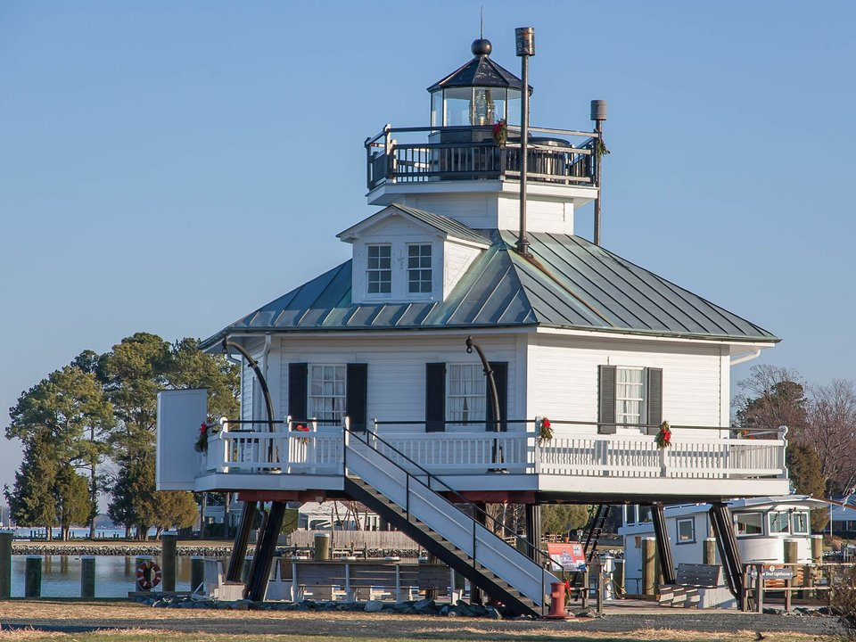

St. Michaels · Waterfront luxury
Inn at Perry Cabin
A luxury inn on the Miles River at the edge of St. Michaels, with gardens, a spa and Stars restaurant. The romantic splurge.
Official details for Inn at Perry CabinCrabs, sailboats and a waterfront inn.
On Maryland’s Eastern Shore, the old harbor towns of St. Michaels and Oxford sit on quiet creeks off the Chesapeake Bay, with historic Easton a short drive inland. Stay at a waterfront inn, pick crabs on the harbor, ride the little Oxford ferry, and watch the sunset from the deck of a sailboat.

Time illustration: direct distance at 150 KTAS plus 15 minutes for departure and arrival, matching the discovery page. Use ForeFlight for your actual flight plan.
KESN, Easton/Newnam Field, is a towered airport just north of Easton, about 20 minutes from St. Michaels and Oxford.
29137 Newnam Road, Suite 5, Easton, MD 21601
Directories list a courtesy car and rental cars at Maryland Air. Easton Jet Service (410-820-8770), also on the field, lists a rental car office on site. Ask about two-night parking and fees. No live fuel price is shown.
The Washington, DC SFRA lies across the Bay to the west, and Patuxent River and Dover have busy military airspace nearby. Review the sectional, restricted areas and current NOTAMs and TFRs.
A celebrated waterfront inn, a grand historic hotel or a relaxed island hideaway. Rates and availability need travel dates.
A luxury inn on the Miles River at the edge of St. Michaels, with gardens, a spa and Stars restaurant. The romantic splurge.
Official details for Inn at Perry CabinA classic 1949 hotel with 86 rooms in the middle of Easton, home to Hunters’ Tavern and an easy walk to shops and the Avalon Theatre. The inn was listed for sale in 2026; confirm details when you book.
Official details for The Tidewater InnA relaxed waterfront hotel in an 1898 boarding house on nine acres of Tilghman Island, about 15 minutes past St. Michaels, with Tickler’s Crab Shack and sunset views over the Bay.
Official details for The Wylder HotelPrices and availability for your dates, through our partner Stay22. This is an affiliate link: we may earn a commission at no cost to you. The picks above are never paid.
Blue crabs are the point from late spring to fall. Reserve weekend dinners.
Refined contemporary European dining in an intimate room in downtown Easton. The special-occasion dinner.
Official details for Bas RougeLocally inspired cooking at Inn at Perry Cabin, inside or on the terrace overlooking the river. Go early for sunset.
Official details for StarsA St. Michaels institution on the harbor, where you pick steamed crabs at picnic tables by the water. Seasonal; check that it is open.
Official details for The Crab ClawSlow and easy. Leave time to sit by the water.
A waterfront campus in St. Michaels with the 1879 Hooper Strait Lighthouse, working boatyards and historic Bay boats. Allow two hours.
Museum informationOne of the oldest privately operated ferries in the country, crossing the Tred Avon River between Bellevue and Oxford. Ride it with bikes or the car for a loop to Oxford. Seasonal.
Ferry scheduleA tiny, quiet town of shaded streets, boatyards and a little beach on the Tred Avon. Lovely for a slow afternoon.
Sunset sails and skipjack cruises leave from St. Michaels and Tilghman Island in season.
Brick sidewalks, galleries, the Academy Art Museum and the restored Avalon Theatre.
The inn’s spa has a private couples suite, a steam room and a relaxation lounge with an outdoor terrace.
Booking: Ask about couples treatments, access for non-inn guests, current pricing and cancellation policy. No prices are shown here, and no appointment has been booked.
This prototype links to the county visitor site. It does not yet match events to your travel dates.
Easton’s big wildlife art and decoy festival, usually the second weekend of November. Fun and busy; book early.
One of the country’s largest outdoor painting competitions, with artists painting all over town.
The best months for crabs, sails and waterfront dining. Summer is warm and busy, with afternoon storms.
Check the county visitor site when choosing a weekend, and confirm dates and tickets with the organizer.
A sample Friday–Sunday weekend: the harbor, the ferry and two waterfront dinners. No bookings or availability confirmed.
Land at KESN mid-morning and pick up the car.
The Chesapeake Bay Maritime Museum, then crabs at The Crab Claw.
A stroll around the St. Michaels harbor, then back to the FBO.
Land at KESN, subject to weather and your actual flight plan, and pick up the car.
Check in, then walk downtown Easton.
Dinner at Bas Rouge.
The Chesapeake Bay Maritime Museum.
Crabs at The Crab Claw, then the spa or a sail.
Sunset dinner at Stars.
Drive or bike to Bellevue, ride the ferry to Oxford and stroll the town.
Return the car and allow time at the FBO.
Summer storms build over the Bay in the afternoon; let weather set the departure.
Bikes and the Oxford–Bellevue Ferry to Oxford.
A sunset sail or a skipjack cruise.
Dinner at a waterfront restaurant on Tilghman Island.
These details make the difference between an appealing list and a usable getaway.
Lodging and a car first, then dinners and any spa time.
The DC SFRA and military areas are close by. Brief them, and check TFRs before every flight.
The ferry and crab houses are seasonal. Check opening dates for spring and late-fall trips.
Rates and restaurant hours are date-dependent. No availability or live price is implied here.
Picks and links reviewed by WingAway Weekends. Hours, prices, menus and availability change often, so confirm directly with each place before booking. Spotted something out of date, or have a favorite we missed? Email us at hello@wingawayweekends.com.
WingAway Weekends helps you discover the destination. Use ForeFlight and current official aviation information for route, performance, weather, NOTAMs and preflight decisions. Flight planning and PIC responsibility stay with the pilot.